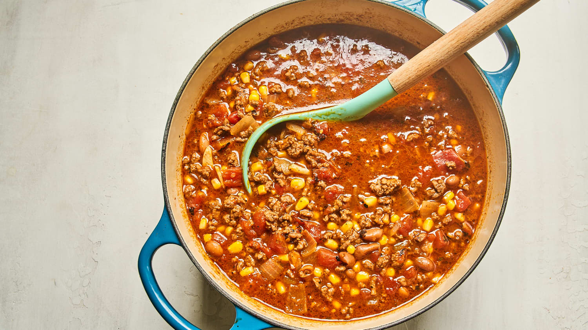

Taco Soup

Easy Make Taco Soup
A brief paragraph describing the dish
Maybe a second paragraph if needed?
Ingredients
- 2 lbs ground beef
- 1/2 cup onion
- 1 pkg ranch dressing
- 1 pkg taco seasoning
- 4 cans stewed tomatoes (puree)
- 4 cans pinto (chili) beans
- 2 cans white hominy
- 2 cans whole kernel corn
- 2 cans chopped green chilis
Steps
- Empty ground beef into your pot. Stir on med/hi until browned and juices have reduced out
- Add water (as directed by taco seasoning mix) and seasonings pouches to ground beef and mix thoroughly
- Add pureed tomatoes and onions
- Drain cans of vegetables and add to mixture
- Lower heat and allow to simmer until served